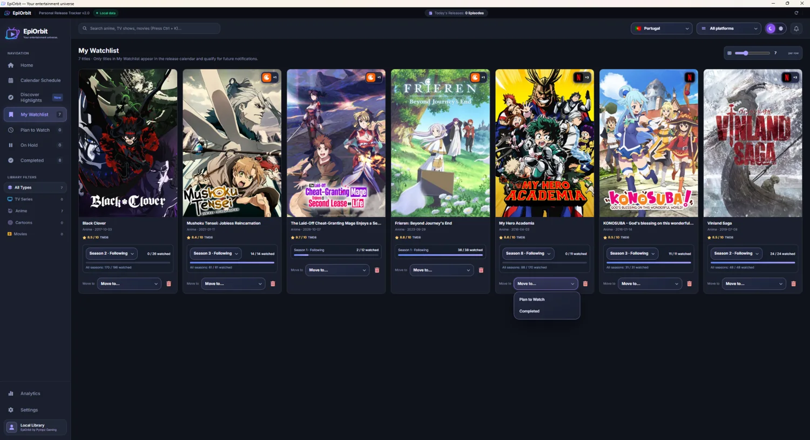
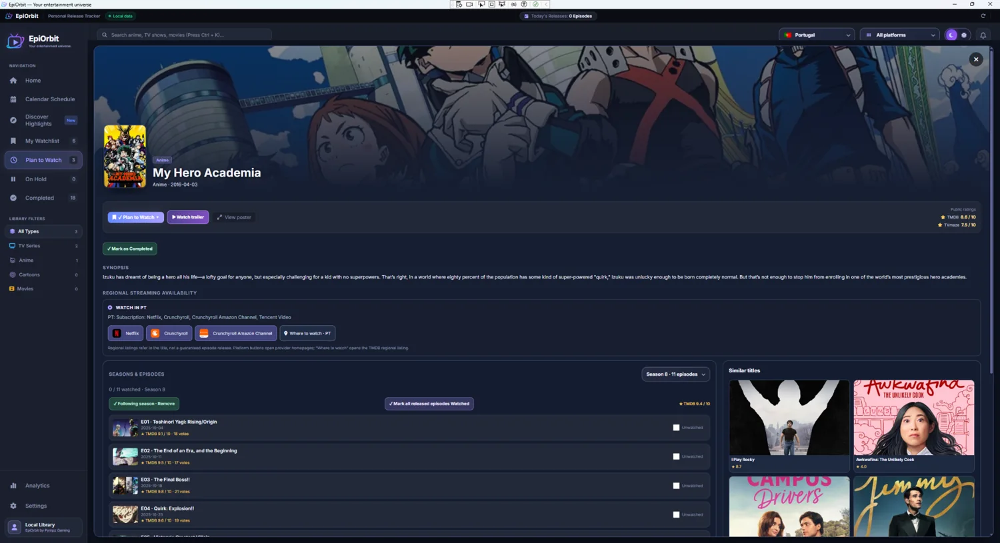

▦
Calendário pessoal
Organiza estreias das tuas listas, incluindo episódios e temporadas quando existirem datas disponíveis.
Descobre séries, anime e filmes. Acompanha temporadas, marca episódios vistos e organiza as próximas estreias num calendário pessoal.
Gratuito para utilização pessoal · Chave TMDB pessoal necessária · OMDb opcional

Organiza estreias das tuas listas, incluindo episódios e temporadas quando existirem datas disponíveis.
Acompanhar, Planeio ver, Em pausa e Concluídos — com o progresso dos episódios guardado.
Pesquisa séries, anime e filmes, incluindo títulos alternativos ou romanizados quando disponíveis.
Marca o que já viste, acompanha novas temporadas e consulta detalhes e trailers disponíveis.
Notificações configuráveis para episódios da Watchlist e marcos de temporadas das listas relevantes.
Modo claro e escuro, português ou inglês, e várias opções de países e plataformas.

Capturas da aplicação. A arte dos filmes e séries pertence aos respetivos titulares de direitos e é apresentada através de fornecedores de metadados.
O primeiro arranque inclui um guia para criares a tua chave gratuita de acesso ao TMDB e, se quiseres, ativar classificações adicionais com OMDb.
↓ Obter EpiOrbit 1.0O programa não inclui API keys de terceiros. Requer acesso à Internet para obter dados atuais.
Esta versão é disponibilizada gratuitamente para utilização pessoal e não comercial. O acesso às APIs tem condições próprias; a chave TMDB é criada pelo utilizador.
As listas e o progresso são guardados localmente no Windows. É recomendável fazer cópias de segurança antes de mudar de computador.
Não. As datas e a disponibilidade dependem dos fornecedores de dados e podem mudar. O país selecionado não garante acesso ao conteúdo em todas as plataformas.
A aplicação mostra informação de disponibilidade, mas não substitui as subscrições, não faz streaming de conteúdos e não contorna restrições regionais.